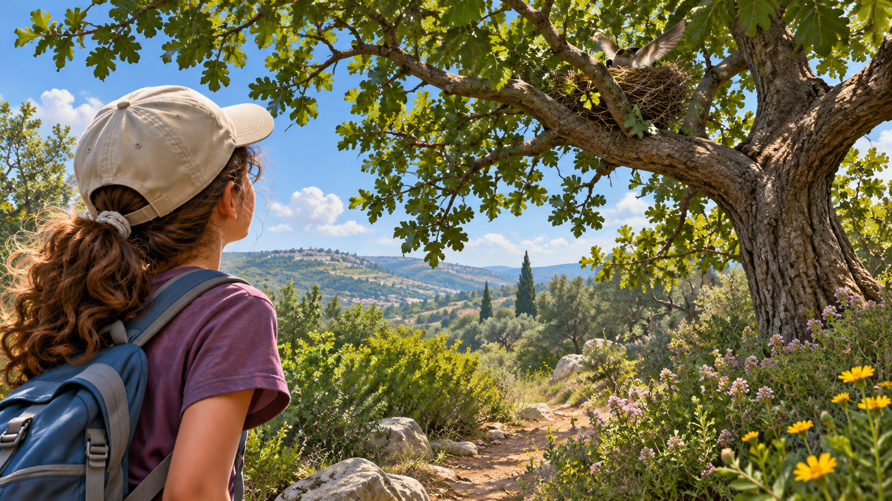

التصوير عن بُعد
عشّ طيور
وصل أحدهم إلى العشّ. لكن من تمكّن من الرؤية؟

الظلّ بين الأغصان
«ها هي! عادت!» همس عمر البالغ تسع سنوات واستوى على المقعد. جلس أطفال نادي الطبيعة في زاوية مراقبة منظّمة، على مسافة من الشجرة العالية في طرف الساحة. بين الأغصان عشّ، لكنّهم من مكانهم رأوا طرفه والأوراق المحيطة به فقط.
حين أدار أصدقاؤه رؤوسهم، عاد كلّ شيء هادئًا. كان عمر متأكّدًا أنّه رأى طائرًا، إلى أن تحرّك غصن مرّة أخرى واكتشف أنّ الظلّ الذي جذب عينيه كان ورقة تتمايل مع الريح. «إذن ماذا رأيت حقًّا؟» سأل.
زيارة لم يرها أحد
في اللقاء التالي أراد الأطفال أن يعرفوا في أيّ ساعات تصل الطيور إلى العشّ. قالت نجا إنّها سمعت زقزقة في الصباح؛ وتذكّر عمر حركة بجانبه بعد الظهر. وصل كلّ واحد في وقت مختلف، ولذلك لم يكن لديهم قصّة واحدة متّفق عليها.
فجأة أشارت نجا إلى العشّ: «الآن هو فارغ! لعلّ الطيور رحلت؟» اقترحت المرشدة أن يفرّقوا بين جملتين: «لم نرَ طائرًا» و«لم يكن هناك طائر». أدرك عمر أنّ النشاط ربما حدث تحديدًا حين لم يكن أحد منهم ينظر.
لا يمكن الاقتراب ببساطة
«إذا وقفنا تحت الشجرة سنرى أكثر بكثير»، اقترح أحد الأطفال. أوضحت المرشدة أنّ المراقبة الجيّدة لا تبرّر الاقتراب من عشّ نشط أو تغيير سلوك الطيور. بقوا في مكان المراقبة المحدَّد مسبقًا، من دون لمس الشجرة ومن دون محاولة جذب الطيور إليهم.
بدا لعمر في البداية أنّ هذا قاعدة تصعّب المهمّة. ثم فهم أنّه جزء من التحدّي: يريدون معرفة ما تفعله الطيور عادةً، لا ما تفعله لأنّ أطفالًا يقفون بالقرب منها.
صورة لنصف القصّة
حاول عمر أن يصف في دفتره ما يُرى من المقعد. حين كانت الشمس خلف الشجرة بدت الأغصان داكنة. وحين اشتدّت الريح حجبت الأوراق العشّ ثم كشفته للحظة. وحتّى طائر يطير خلف الجذع قد يختفي دون أن يُعرف إلى أين تابع.
اكتشف الأطفال أنّ التفاصيل الصغيرة تتعلّق بالمسافة وبزاوية النظر. وصورة واضحة للأغصان لا تروي بالضرورة ما يجري خلفها. وحتّى صورة لعشّ يبدو فارغًا تصف لحظة معيّنة فقط.
دفتر لا يتّفق مع نفسه
في نهاية الأسبوع قارن التلاميذ تسجيلاتهم. كتبت نجا «زيارتان إلى العشّ». وكتب عمر «واحدة، ربّما». وطفل ثالث راقب عشر دقائق فقط، وفي سطر الخلاصة كتب «لم يكن هناك نشاط».
لاحظ عمر أمرًا غريبًا: حاولوا مقارنة عدد الزيارات، لكن مدّة المراقبة والساعات لم تكن متماثلة. هل يمكن القول إنّ الطيور كانت أقلّ في اليوم الذي راقبوا فيه وقتًا قصيرًا فقط؟ وللمرّة الأولى اهتمّ الجميع لا بما رأوه فحسب، بل بما لم تتح لهم فرصة رؤيته أيضًا.
ما الذي ما زال مختفيًا
تعرف المجموعة أين يُسمح بالمراقبة، وأيّ جزء من العشّ يظهر للعين، وفي أيّ ساعات كان كلّ طفل في المكان. وهي لا تعرف ما حدث بين المراقبات، وفي أيّ حالات تحجب الأوراق العشّ، وهل الحركتان اللتان رُئيتا من بعيد تعودان إلى الطائر نفسه.
«إذن لعلّ السؤال الأوّل ليس كم طائرًا رأينا»، قال عمر، «بل كيف نعرف أنّنا نجمع معلومات يمكن الوثوق بها». طلبت المرشدة أن يصوغوا ما يريدون تعلّمه بالضبط قبل اختيار طريقة للتوثيق.
قبل أن نبتكر
في اليوم التالي سُمعت زقزقة من الشجرة مرّة أخرى، لكن عمر لم يسرع هذه المرّة ليعلن ما حدث. فتح الدفتر وكتب: «سُمعت زقزقة؛ لم يُرَ الطائر». كان واضحًا له أنّ القصّة لم تنتهِ بعد — وهو يريد اكتشاف تتمّتها.
كيف نميّز بين ما رُصد وما هو مجرّد تخمين؟ أيّ معلومات مهمّ جمعها على امتداد الزمن، وأيّ ظروف قد تجعل المراقبة تفوّت حدثًا؟ وكيف يمكن فعل ذلك من مسافة آمنة، من دون إزعاج الحيوانات؟
تلميح من عالم الفضاء
تجمع أجهزة الرصد في الفضاء معلومات من مسافة، لكن كلّ رصد محدود بالمكان والزمان ومستوى التفاصيل الذي يمكن رؤيته. أحيانًا توفّر عدّة رصود صورة أفضل من رصد واحد. أيّ معلومات عن زمن الرصد وعمّا حُجب مهمّة أيضًا في حالة العشّ؟
قاعدة سلامة وحماية الطبيعة: لا يُقترب من عشّ نشط، ولا يُركَّب فيه معدّات، ولا يُشغَّل قربَه طائرة مسيّرة؛ تبقى المراقبة من بعيد ووفق توجيهات جهة مهنيّة.
بعد القراءة — في ورقة الفريق
تحدّثوا في الفريق وأجيبوا استنادًا إلى معلومات القصّة. إذا نقصت معلومة، اكتبوا سؤالًا للمتابعة.
- من تريدون مساعدته في القصّة؟
- ماذا يحاول أن يفعل وما الذي يصعّب عليه ذلك؟
- ما الذي يحتاج إلى أن يكون قادرًا على فعله؟
- ما الذي تريدون معرفته أيضًا قبل تطوير الأفكار؟